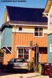
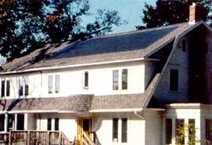

1. Personal and national security. The more we tap solar and other renewable energy sources, the less dependent we are on utility giants and nonrenewable fossil fuels. Solar roofs can even be used to charge electric vehicles, which will reduce pollution and decrease our need for foreign oil.
2. Protection against price increases. Electricity prices in many states are increasing. In California a combina tion of deregulation, population growth, increased consumer demand and construction of fewer new power plants caused electricity costs to skyrocket. Other states are watching similar trends and expect prices to increase in the coming years. With nuclear power plants being decommissioned or phased out because of the high costs and high risks related to nuclear waste disposal, and with the best hydroelectric sources tapped, new sources of electricity are needed. Even though many new gas-fired power plants have been constructed, some analysts see natural gas shortages emerging that will require expensive drilling and pipeline construction. This points to higher natural gas prices rippling across to electricity prices.
3. Rebates . Some states are finally getting serious about supporting renewable energy options. Government rebates, tax credits and grants can cut the cost of your solar roof by up to 60 percent in some areas. To learn what's available in your state, go to the Database of State Incentives for Renewable Energy (DSIRE), www.DSIREUSA.org .
4. Selling back peak power to the grid via net-metering. Net-metering rules and regulations are in place in 34 states, allowing homeowners to run their electrical meters backward when they send electricity to the grid from a solar-electric rooftop. When the homeowner uses electricity from the grid at night or on cloudy days, the meter runs forward. The monthly bill is based on the net difference.
Distributed electrical generation provides more security for homeowners and for the electrical network (the grid). Generating cleaner, locally produced electricity reduces the load on the grid and can also jump-start the formation of local public utilities. These nonprofit utilities are run by a locally elected board for public benefit, in contrast to investor-owned utilities that are run for private profit.
5. Global warming reductions. According to the Department of Energy (DOE), electric power plants emitted 40 percent of all carbon dioxide (CO 2 ) emissions in the United States in 1999, making them the largest single-source contributor to global warming. Fifty-one percent of all the electricity produced in the United States in 1999 was generated by coal-fired plants, yet these plants produced 80 percent of all the C0 2 emissions resulting from electricity power generation. DOE also reports one-quarter of all types of air pollution emissions nationwide are caused by burning fossil fuels (coal, natural gas and oil) to generate electricity.
6. A response to "Not in my back yard" Conventional power plants and transmission lines take years to plan, site and build - and most people do not want them in their back yards. Power distribution systems feeding metropolitan areas are operating near capacity during peak demand periods. Onsite power production via home solar-electric installations, part of a "distributed generation" scenario, offers a positive solution for elected officials seeking to prevent blackouts and brownouts, improve air quality and enhance the economy by producing jobs.
7. A beautiful, distinctive, high-tech, home design element. Technological developments have resulted in more appealing and affordable systems, designed to complement a home's architecture. With Building-Integrated Photovoltaics (BIPV), the solar-electric system is the roof.
8. Supporting the future of solar power. The PV market is worth $2 billion today, and is expected to grow to $10 billion by 2010. The annual growth rate of solar PV products has increased by 20 percent annually and is expected to double every three years for the next 20 years. This growth should spur additional investment, contribute to economies of scale in the industry and help make systems even more affordable.
|
 |
 |
|